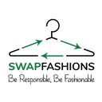
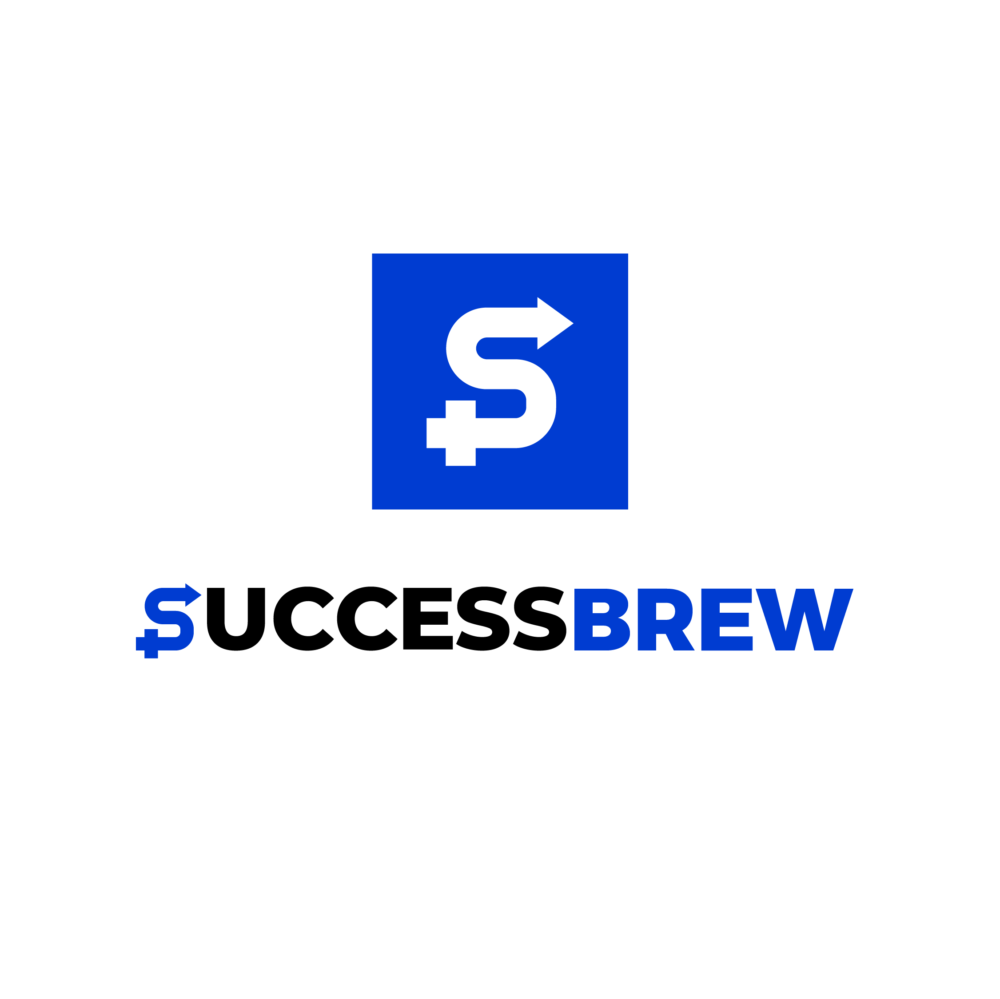

My AI operating system
A personal automation layer for moving information through the parts of life and work that matter.
Ask me about it ↗Startup operator / since 2011
Since 2011, I’ve worked hands-on with startups—finding markets, building communities and fixing the systems that keep ambitious teams from moving.
I was a college student when I started working with startups in 2011. Since then I’ve built companies, communities and operating systems across very different worlds.
My lesson is simple: slow down to validate the idea, build the product properly and create systems that can scale. Then, when the foundation is right, grow aggressively.
I don’t arrive with a deck of generic advice. I listen, observe, find the real constraint and stay close enough to help fix it.
I get on the ground. I figure out what is actually happening. Then we make the thing work.
People, customers, data, context. No assumptions before the facts.
The visible problem is rarely the real constraint.
Digital or physical, the system has to survive beyond the hack.
Blunt when it needs to be. Hands-on until the work is done.
Go-to-market is the work you do before you get to marketing: validating demand, finding the right market, shaping the offer and building the path to revenue.
Founder, reader and community-builder networks built around real value and belonging.
Work with me ↗At Letshang, I work across positioning, demand generation, systems and execution—staying close to the team until the work moves.
Tell me what’s broken ↗

I’m building dashboards, products, websites, automations and workflows with AI. This is where I’ll share the useful parts: what I built, why I built it and how you can start.
A personal automation layer for moving information through the parts of life and work that matter.
Ask me about it ↗Small tools and dashboards built to answer real questions and make work more hands-on.
See the next build ↗Prompts and getting-started documents to help you build your own systems with AI.
Get the playbook ↗FarmtoCups and Crust & Kettle keep me close to ingredients, customers, compliance and the operational truth of building an F&B business.
I work across sourcing, recipes, product development and the B2B funnel around high-quality flowers grown in India.
I build SOPs, modular systems and structures that make food operations more efficient and ready to scale.
Stories teach me how to build narratives that people want to enter.
Harry Potter · Eragon · Actionable GamificationCooking is where I create: designing something out of nothing.
Recipes, authenticity, and the occasional obsessionNew places are a way to collect better questions.
Always learning from the roadI care about ethical building, access to education and the roots of how economies work.
Ex-Teach For India fellow · mentorTell me what’s broken, what you’re building, and where you’re stuck. I’m interested in on-ground problems, useful systems and work that actually changes something.
Tell me what’s broken ↗